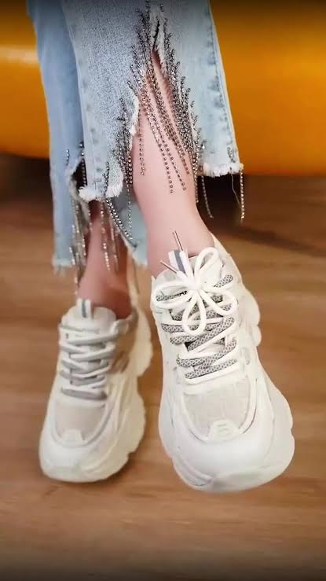

Tying your shoes with bunny ears in 2026? How dreadfully uninspired! Fear not, for this tutorial shall rescue you from the clutches of saddening mediocrity.
This tutorial will teach you how to give your footwear a little more character by turning your shoelaces into a butterfly-shaped bow.
The butterfly bow uses ordinary shoelaces, but the loops are arranged to resemble butterfly wings.

| Feature | Regular Bow | Butterfly Bow |
|---|---|---|
| Difficulty | Eyes are closed | A skilled 4-year-old |
| Appearance | Boring | Majestic |
| Style | What style? | Your hallway crush is staring |
Visit the amazing, great, and super fun CSCI 40 course website! .
Visit our awesome Professor Teal Witter's website! .
You can also explore more shoelace ideas at Creativity at Your Feet .